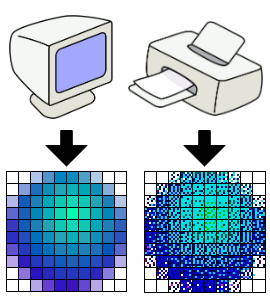
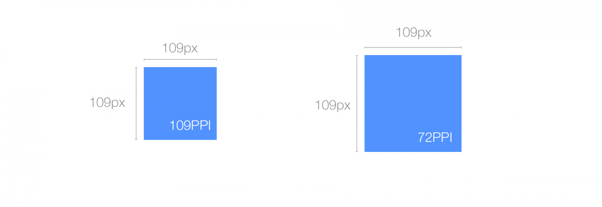
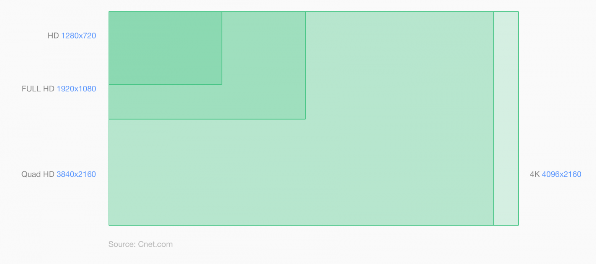
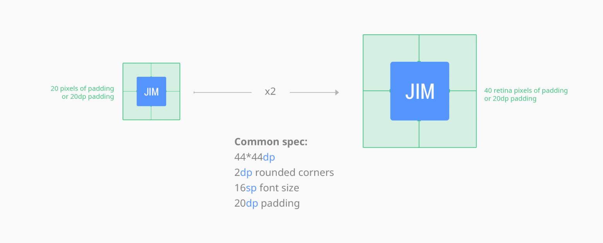
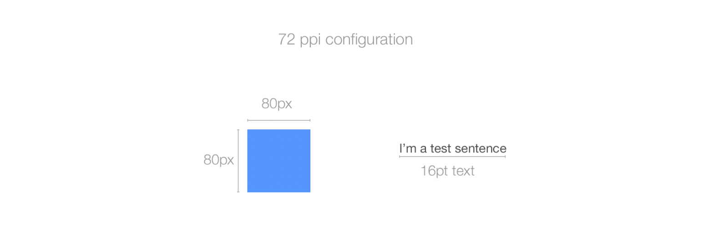
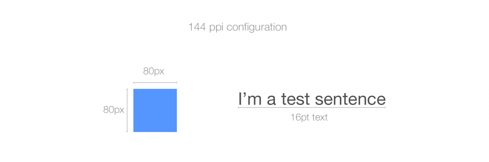

Для кого это создано
На одном мероприятии посвященном созданию правильных презентаций слушатели не приняли формулировку "качественое фото" и фразу "разрешение ≥ 720p
(1280*720)".
Специально для них и тех, кто не знает разницы между экранным и печатным разрешением
создано это разъяснение.
p — прогрессивная разверка: каждая диния рисуется отдельно и последовательно
Терминология
Пиксель — компоненты цифрового изображения или компьютерного монитора.
Точка — минимальный объект, который может быть распечатан.
Терминология
PPI («пиксели на дюйм») — количество пикселей, которые можно
найти на квадратном дюйме цифрового изображения.
DPI («точки на дюйм») — количество точек на один квадратный дюйм.
Изображение на дисплее размером 10×10 пикселей

Материал
из wikipedia
Все синие пиксели, составляющие сферу,
воспроизводятся принтером с помощью различных наложенных друг на друга комбинаций голубых,
пурпурных и черных чернил, а светло-голубой цвет воспроизводится с помощью голубых и желтых
чернил с
добавлением «белых» (бесцветных) пикселей печати внутри фактического изображения. При просмотре
с более близкого расстояния цветные точки сливаются в более гладкое и насыщенное изображение.
PPI важен при работе с цифровым изображением.
Увеличение PPI позволяет повысить детализацию изображений.
Увеличение DPI — более качественные отпечатки и размеры.
Это связано с тем, что изображение 72 или 300 PPI и изображение 6720 PPI будут выглядеть
одинаково на мониторе компьютера.
Стандартные PPI
Смартфон (6–7") — ≥ 350–500Планшет — 400-500Ноутбук — 140–150Монитор — ≥ 120–130Монитор (графика) — 140–150Телевизор — 50Телевизор 4K-8K — 100
Использование PPI в ОС
Windows — 96 – 120 PPI
Mac — 72 – 120 PPI
экран Mac Cinema 27 дюймов имеет 109 PPI, что означает, что он отображает 109 пикселей на
дюйм экрана. Ширина с рамкой является 25,7 дюймов (65 см). Ширина фактического экрана
составляет примерно 23,5 дюйма, так 23,5 * 109 ~ 2560, что делает физическое разрешение
экрана 2560x1440px. *Я знаю, что 23,5 * 109 не равно точно 2560.
Влияние на дизайн

Источник
оставив в сторону разногласия цвета и разрешения, имейте в виду, что все будут видеть ваш дизайн
по разному. Вы должны стремиться к наилучшему компромиссу и создавать для наибольшего процента
пользователей. Не думайте, что у пользователь такой же экран, как у вас.
HD, Full HD, Quad HD, 4K

DP, PT и SP
DP — пиксель независимый от устройстваPT — точкаSP — масштабно независимый пиксель
Источник
В этом случае JIM будет иметь размер 44 * 44DP или PT и отступы 20DP или PT. Вы можете отдавать
свое тех. задание в любом PPI, JIM по прежнему будет 44 * 44dp или pt.
Источник
Источник
настройки PPI не влияют на экспорт для интернет.
настройки PPI будут только влиять на графику созданную на основе PPI-независимых измерениях,
таких как PT
Пиксель единица измерения для всего цифрового.
Держите в уме множители и то что вы разрабатывайте, а не PPI.
Используйте реалистичные настройки PPI при проектировании для цифровой техники, которые дают
вам ощущение того, как это будет выглядеть на целевых устройствах (например 72-120ppi для 1x
интернет сайтов/ настольных компьютеров).
Придерживайтесь одинаковых настроек PPI для всех ваших файлов.
Вывод
DPI относится к печатному изображению на любом принтере, в то время как PPI относится к цифровому
изображению на компьютере или мониторе.
{kind=link}